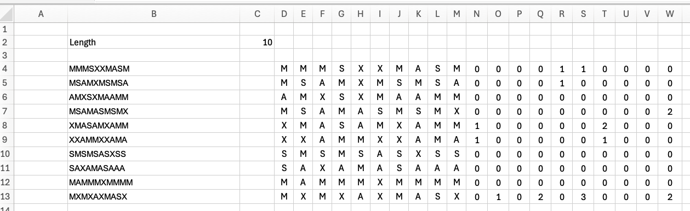
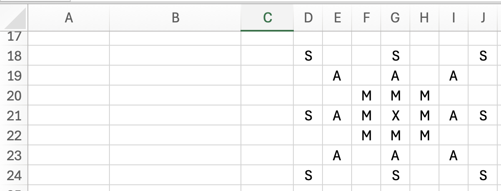
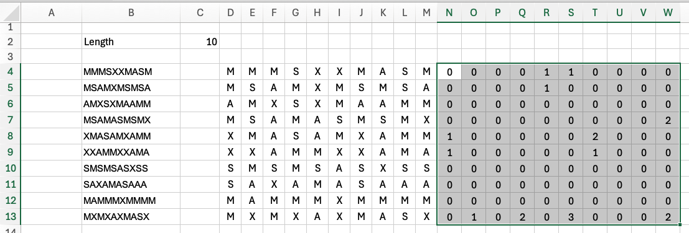
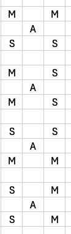

Advent of Code - Day 4 - Finding patters (Excel)
(task)
I Made It to Day 4!
And today’s task perfectly fits Excel. Some—if not most—people don’t like Excel and would never consider it a serious tool for data analytics, exploration, or even “engineering.” Well, you’re wrong about Excel. It’s quite powerful if you know how to use it. Let me show you…
The first part of the task is a kind of word riddle where we have to count occurrences of “XMAS” in a huge grid of letters. And actually, that’s pretty easy with Excel. I’d even say it’s easier than using a fully-fledged scripting tool.
Solution to the First Part
The input comes as a couple of lines. To make each character addressable, we first need to split each character into its own column. While I could use “Text to Columns,” the goal is to make this dynamic, so I will utilize a formula:
_LENGTH refers to [C2]
[D1]=MID(B4;SEQUENCE(1;_LENGTH);1)
If you pull this formula down, you get a matrix like this (referring to the example input):

The following image shows all possible solutions:

We start with the most simple solution, where XMAS is plotted from the center to the right. The surrounding if-condition is temporary, only to make the result visible:
=IF(CONCAT(G21;H21;I21;J21)="XMAS";"+";"")
It’s quite easy, right? We copy the formula (not the result of the cell!) to a text editor and modify it to get the other seven directions.
Eventually, you end up with eight lines looking like this:
=IF(CONCAT(G21;H21;I21;J21)="XMAS";"+";"")
=IF(CONCAT(G21;H22;I23;J24)="XMAS";"+";"")
=IF(CONCAT(G21;G22;G23;G24)="XMAS";"+";"")
=IF(CONCAT(G21;F22;E23;D24)="XMAS";"+";"")
=IF(CONCAT(G21;F22;E23;D24)="XMAS";"+";"")
=IF(CONCAT(G21;F20;E19;D18)="XMAS";"+";"")
=IF(CONCAT(G21;G20;G19;G18)="XMAS";"+";"")
=IF(CONCAT(G21;H20;I19;J18)="XMAS";"+";"")
To count the occurrences of all existing solutions, we could either build some kind of LAMBDA function or use a simple trick: We just cast the TRUE or FALSE result to an integer:
=--(VERKETTEN(G21;H21;I21;J21)="XMAS")+
--(VERKETTEN(G21;H22;I23;J24)="XMAS")+
--(VERKETTEN(G21;G22;G23;G24)="XMAS")+
--(VERKETTEN(G21;F21;E21;D21)="XMAS")+
--(VERKETTEN(G21;F22;E23;D24)="XMAS")+
--(VERKETTEN(G21;F20;E19;D18)="XMAS")+
--(VERKETTEN(G21;G20;G19;G18)="XMAS")+
--(VERKETTEN(G21;H20;I19;J18)="XMAS")
And now apply it to our testing dataset. Copy the cell (not the formula!) next to our matrix. It should refer to the first column in the first row. Then drag it to the right and down to cover the whole area. You should end up with something like this:

The sum of the matrix is 18 — which is exactly the number of XMAS hidden in the test dataset. Now take the actual puzzle input, copy it to your sheet, and apply your magic formula to it. If you want to avoid dragging the formula to the right and down, you could use SEQUENCE again, but we’ll save that for later…
The good thing about the Excel approach is that the second part doesn’t make it more complicated. We stick with our strategy and now just look for all possible variations of X-MAS. There are four:

And our formula changes a little. We know that A has to be in the middle. We concatenate the surrounding four cells and just test for all four possible combinations of S and M, which leads us to something like this:
=--(OR(CONCAT(F210;G209;G211;E211;E209)="AMSSM";
CONCAT(F210;G209;G211;E211;E209)="ASSMM";
CONCAT(F210;G209;G211;E211;E209)="ASMMS";
CONCAT(F210;G209;G211;E211;E209)="AMMSS"))
It’s even simpler than the previous one! Again, just make it reference your dataset, and you get the correct result!
Whats up, Excel?
Rating: 10/12 – understimated and powerful
I’m not gonna lie: I really love Excel. Since a couple of years, Excel also supports LAMBDA, which allows for more complex calculations and even functional programming. You can even build an animated ticker in Excel (shameless self-promotion)!
That said… see you next day!